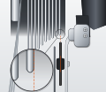

1 H limit big ring · smallest cog
From behind · shifter fully released
Barrel adjuster in 2 turns, so the cable plays no part.1
H in half a turn at a time until the chain rubs the next cog in. Then out a quarter turn at a time until it is quiet. If two settings are equally quiet, take the tighter.1
Check by eye: pulley centre under the smallest cog's outer face.5,7